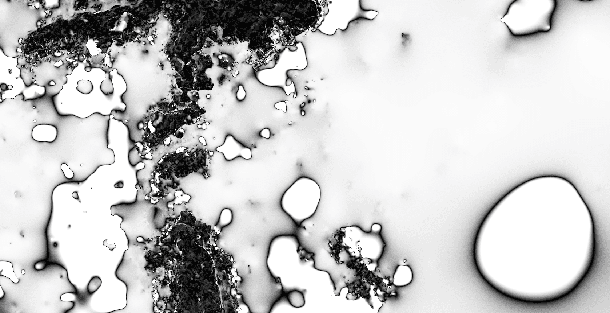

Compétences techniques développées
Géomatique
- WepMapping sous R (utilisation du package leaflet)
Terrain
- Acquisition de données phoniques
Phare de l'île d'Aix.
Téo Biglietti, 2023.

Exemple : estimation du risque de submersion marine
- Traitements de modèle de numérique de terrain (litto3D)
- Modélisation de hauteur d'eau pour un aléa extrême en fonction des scénarios du GIEC
- Identification du bâti touché et des potentiels enjeux humains

Compétences techniques développées
Géomatique
- Traitements et cartographie de modèle de numérique de terrain
- Modélisation de hauteur d'eau sur MNT
Graphisme
- Conception d'une édition sous InDesign
Terrain
- Entretien
Autre
- Réalisation d'un court métrage sur l'abbaye de Daoulas
Topographie de la commune de Daoulas (détail).
Données : Litto3D (SHOM/IGN, 2014).
Antoine Le Doeuff, 2021.

Étude Globale de l'étang du Curnic en vue de renforcer ses capacités épuratoire et d'accueil de la biodiversité remarquable
Avril 2022 → août 2022 • Stage de Master 1 • Mairie de Guissény
Conduction d'une étude globale sur l'étang du Curnic à Guissény. L'objectif était de traiter des données physico-chimiques, hydrologiques et topo-bathymétriques afin d'accroître les connaissances sur ce système lagunaire dans l'objectif de parvenir à une gestion appropriée de son syndrome d'eutrophisation. Le rapport est disponible en ligne.

Le poster réalisé à l'issu du stage synthétise les enjeux, pressions et gestions potentielles de l'étang. Il est lauréat du concours interne des posters.

Vulnérabilité des routes départementales du Finistère aux risques de submersion et d'érosion marine
Septembre 2022 → février 2023 • UE de Master 2 EGEL
Diagnostic de la vulnérabilité des routes départementales du Finistère
aux risques d’érosion et de submersion marine aux horizons 30 et 100 ans. La
vulnérbilité est estimée à l'aide
de deux indices de vulnérabilité restituant les différentes
dimensions du risque à l'échelle départemental et local.
Étude commanditée par le Conseil Départemental du Finistère dans le cadre du partenariat
Litto'risque.
Affouillement de la route à Morgat (D 887). Téo Biglietti, 2022.


{kind=link}
-
L’illustration s'appuie sur la chorématique. La structure de la commune est caractérisée par ses flux tant physiques (rivière et marée) qu'anthropiques (route nationale à l'Est orientée N-S et route départementale sur un axe NNW-SSE). Située au Nord du centre-ville, l'abbaye de Daoulas est le seul pôle de la ville, son rayonnement est départementale. La partie Sud-Ouest de la commune est distinguée par son activité agricole.
-

La couche utilisée est celle d'EDMONET.
-
La couche utilisée est celle d'EDMONET.
-
La couche utilisée est celle d'EDMONET.
-

La couche utilisée est celle d'EDMONET.
Traitement de données
- Traitements de données vectorielles
- Traitements de données matricielles
- Chaîne de traitements
- Model Builder
- Processing
- Plugin
Très bonne connaissance
- Préparation de données
- Traitement de données temporelles
- Traitement de données spatiales
- Traitement de données textuelles
Très bonne connaissance

- Préparation de données
- Traitement de données temporelles
- Traitement de données spatiales (pyQGIS)
Bonne connaissance
- Traitement de données spatiales
Très bonne connaissance des requêtes élémentaires.
Connaissance modérée des functions spatiales.
- Alignement de photos drônes
- Génération de Modèles Numériques de Terrain
- Génération d'orthomosaïques
Metashape est un logiciel de traitement photogrammétrique
Bonne connaissance
- Classification non-supervisée
- Classification supervisée
- Orientée pixel
- Orientée objet
Connaissance modérée
- Traitement de données spatiales
Connaissance modérée
Lire abondamment toute sorte de littérature
Un penchant pour l'art pictural et le
design graphique
Jouer et écrire de la musique — en écouter,
beaucoup
Des projets étranges avec des amis étranges : se former par l'absurde
Théâtre
Randonner, se promener
Certificat d'Étude Théâtrale. Conservatoire de Musique et d'Art Dramatique de Quimper. 2015 — 2018
Émile Cioran — Fiodor Dostoïevsky — Samuel Beckett — Karl Renz — Franz Kafka — Nisardagatta
Maharaj...
J.S. Bach — The Third Eye Foundation — Stang Getz — Murcof — Steve Reich — Dmitri Shostakovitch...
Jérôme Bosch — Félix Valloton — Robert Massin — Gustave Moreau — Edvard Munch...